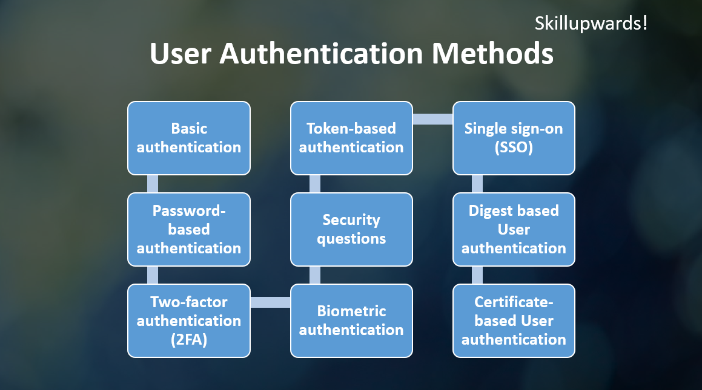

What is User Authentication
User authentication is the process of verifying the identity of a user. It is a common security measure that is used to protect systems and resources from unauthorized access. When a user tries to access a protected resource, they are prompted to provide their login credentials, which are verified by the system before granting access.
For Example:
In the context of a website, User authentication is a way to make sure that only the right people can access certain parts of a website. When someone tries to go to a part of the website that is protected, they are asked to provide their login information, like a username and password. The website checks this information to make sure it is correct, and if it is, the website grants access to the protected space of the website.
Why Is the User Authentication Important?
User authentication is important because it helps to ensure that only authorized users can access sensitive or confidential information, and it helps to prevent unauthorized access and misuse of resources. Without proper authentication, anyone could potentially access restricted resources and cause harm or damage.
User authentication also helps to protect against security threats such as identity theft, data breaches, and phishing attacks. It helps to ensure that only trusted users have access to sensitive information, which can reduce the risk of data leaks and other security incidents.
In addition, user authentication is often required by law or industry regulations to protect sensitive data, such as personal information or financial records. This can help to ensure compliance with relevant privacy laws and regulations, and to avoid legal consequences for non-compliance.
Overall, user authentication is a crucial security measure that helps to protect systems and resources from unauthorized access and misuse.
Most Common User Authentication Methods
There are several methods that can be used to authenticate users. Some common methods include:
Basic authentication
Basic authentication is a simple form of user authentication that is commonly used in HTTP, the protocol used to transfer data on the web. It is based on the premise that the client sends the server a username and password, and the server verifies the credentials and grants access if they are correct.
In basic authentication, the client sends an HTTP request to the server, and the server responds with an HTTP 401 Unauthorized status code, indicating that the client needs to authenticate in order to access the requested resource. The server also includes a "WWW-Authenticate" header in the response, which specifies the authentication method and realm (i.e., the protected area of the server).
The client then prompts the user for their username and password and resends the request with an "Authorization" header, which contains the base64-encoded credentials in the format "username:password". The server receives the request and decodes the credentials from the header and verifies them against a database of registered users. If the credentials are correct, the server grants the user access to the protected resource and returns an HTTP 200 OK status code. If the credentials are incorrect, the server returns an HTTP 401 Unauthorized status code and may prompt the user to try again or may lock the account after a certain number of failed login attempts.
Basic authentication is simple to implement and works well in environments where the client and server are trusted and communication is secure. However, it has several security limitations, such as the transmission of unencrypted credentials over the network and the lack of support for stronger forms of authentication. As a result, it is not suitable for all applications and is often used in combination with other forms of authentication, such as SSL/TLS encryption or two-factor authentication (2FA).
Overall, basic authentication is a basic but widely used method of user authentication that is suitable for certain use cases, but it is important to consider its security limitations and to use it in combination with other forms of authentication in order to provide a higher level of security.
Password-based authentication
Password-based authentication is a method of verifying a user's identity by requiring them to provide a password. It is one of the most commonly used methods of user authentication, and it is often used in combination with other forms of authentication, such as two-factor authentication (2FA). In a password-based authentication system, the user is required to provide a valid username and password in order to access a protected resource.
The server verifies the credentials by checking them against a database of registered users and their associated passwords. If the credentials are correct, the server grants the user access to the protected resource. If the credentials are incorrect, the server denies access and may prompt the user to try again or may lock the account after a certain number of failed login attempts.
In a password-based authentication system, the user is required to provide a valid username and password in order to access a protected resource. The server verifies the credentials by checking them against a database of registered users and their associated passwords. If the credentials are correct, the server grants the user access to the protected resource. If the credentials are incorrect, the server denies access and may prompt the user to try again or may lock the account after a certain number of failed login attempts.
Benefits of Password-based authentication
Easy to implement: Password-based authentication is simple to set up and does not require any additional hardware or software.
Widely supported: Most systems and applications support password-based authentication, making it a widely available and flexible option.
Familiar to users: Password-based authentication is familiar to most users, making it easy for them to understand and use.
Drawbacks of Password-based authentication
Risk of password cracking: Passwords can be guessed, stolen, or cracked, which can compromise the security of the system.
Weak passwords: Users may choose weak passwords or reuse the same password for multiple accounts, which increases the risk of unauthorized access.
Risk of password transmission: Passwords may be transmitted in unencrypted form over the network, which can expose them to interception.
Password reset: Users may forget their passwords, requiring a password reset process, which can be inconvenient and may create security risks.
Password-based authentication has both benefits and drawbacks, and it is important to consider these when deciding whether to use it for a particular system or application. It may be suitable in some cases, but it may be necessary to use it in combination with other forms of authentication in order to provide a higher level of security.
Two-factor authentication (2FA)
Two-factor authentication (2FA) is a method of user authentication that requires the user to provide two different authentication factors in order to access a protected resource. It is designed to provide an additional layer of security by making it more difficult for an attacker to gain access. 2FA is commonly used in combination with password-based authentication, and it is widely supported by systems and applications.
Benefits of Two-factor authentication (2FA)
Improved security: 2FA provides an additional layer of security by requiring the user to provide two different authentication factors. This can significantly reduce the risk of unauthorized access, especially in cases where the password may be weak or compromised.
Widely supported: 2FA is widely supported by systems and applications, making it a widely available and flexible option.
Familiar to users: 2FA is becoming increasingly common, and many users are familiar with the process of providing a second authentication factor, such as a code sent to their phone.
Customizable: 2FA can be customized to meet the specific needs and constraints of the system, such as by allowing the use of different authentication factors or by requiring 2FA only for certain types of transactions.
Compliance: Some industries or regulatory frameworks may require the use of 2FA in order to meet security standards or compliance requirements.
Drawbacks of Two-factor authentication (2FA)
Dependence on second factor: 2FA relies on the availability and reliability of the second authentication factor, such as a phone or security token. If the second factor is unavailable or not functioning properly, the user may be unable to access the protected resource.
User inconvenience: 2FA may be inconvenient for users, especially if they need to provide the second authentication factor frequently or if the process is slow or cumbersome.
Additional cost: 2FA may involve additional costs, such as the cost of security tokens or the cost of SMS messages for phone-based authentication.
2FA can provide a significant improvement in security and is widely supported by systems and applications. However, it is important to consider the potential drawbacks and to weigh the benefits and costs in order to determine whether it is suitable for a particular system or application.
Biometric authentication
Biometric authentication is a method of verifying a user's identity based on their physical or behavioral characteristics. Examples of biometric authentication methods include fingerprint scanners, facial recognition, iris scanners, and voice recognition.
Biometric authentication is designed to provide a high level of security by making it difficult for an attacker to impersonate the user. It is often used in combination with other forms of authentication, such as password-based authentication or two-factor authentication (2FA).
Benefits of Biometric authentication
Improved security: Biometric authentication provides a high level of security by verifying the user's identity based on their physical or behavioral characteristics. It is difficult for an attacker to impersonate the user, making it less likely that unauthorized access will be granted.
Convenience: Biometric authentication can be more convenient for users than other forms of authentication, such as password-based authentication, because it does not require the user to remember or enter any additional information.
Widely supported: Biometric authentication is supported by many systems and devices, making it a widely available and flexible option.
Customizable: Biometric authentication can be customized to meet the specific needs and constraints of the system, such as by allowing the use of different biometric modalities or by requiring biometric authentication only for certain types of transactions.
Drawbacks of Biometric authentication
Dependence on hardware: Biometric authentication requires specialized hardware, such as fingerprint scanners or facial recognition cameras, which can be expensive to implement and maintain.
False rejections or false acceptance: There is a risk of false rejections or false acceptance with biometric authentication, which can occur when the system fails to accurately verify the user's identity. This can be frustrating for users and may impact the usability of the system.
Privacy concerns: Some users may be concerned about the privacy implications of biometric authentication, such as the potential for biometric data to be collected or used without their consent.
Biometric authentication can provide a high level of security and convenience, but it is important to consider the potential drawbacks and to weigh the benefits and costs in order to determine whether it is suitable for a particular system or application.
Security questions
Security questions-based authentication is a method of verifying a user's identity by requiring them to provide the answers to one or more predetermined security questions. It is often used as a secondary form of authentication, in combination with password-based authentication or other methods.
Benefits of Security questions
Easy to implement: Security questions-based authentication is simple to set up and does not require any additional hardware or software.
Familiar to users: Security questions-based authentication is familiar to most users, making it easy for them to understand and use.
Customizable: Security questions-based authentication can be customized to meet the specific needs and constraints of the system, such as by allowing the use of different questions or by requiring security questions-based authentication only for certain types of transactions.
Drawbacks of Security questions
Risk of answers being stolen or guessed: The answers to security questions can be stolen or guessed, which can compromise the security of the system.
Risk of users forgetting answers: Users may forget the answers to their security questions, which can be inconvenient and may require a reset process.
Privacy concerns: Security questions-based authentication may involve the collection and storage of personal information, which can raise privacy concerns.
Security questions-based authentication is a simple and widely used method of verifying a user's identity, but it is important to consider its limitations and to use it in combination with other forms of authentication in order to provide a higher level of security.
Token-based authentication
Token-based authentication is a method of verifying a user's identity by requiring them to provide a token, which is a unique string of characters that is generated by the server and sent to the client. The client then sends the token back to the server with each subsequent request, and the server verifies the token in order to grant the user access to the protected resource. Token-based authentication is often used in combination with other forms of authentication, such as password-based authentication, and it is widely supported by systems and applications.
Benefits of Token-based authentication
Improved security: Token-based authentication can provide a higher level of security by using unique, time-limited tokens that are difficult for an attacker to intercept or forge.
Scalability: Token-based authentication can scale more easily than other forms of authentication, such as session-based authentication, because it does not require the server to store state information for each user.
Customizable: Token-based authentication can be customized to meet the specific needs and constraints of the system, such as by allowing the use of different token formats or by requiring tokens only for certain types of transactions.
Widely supported: Token-based authentication is widely supported by systems and applications, making it a flexible and widely available option.
Drawbacks of Token-based authentication
Dependence on token transmission: Token-based authentication relies on the secure transmission of tokens between the client and server, which can be vulnerable to interception if not properly protected.
Token management: Token-based authentication requires the server to manage and verify tokens, which can be resource-intensive and may require additional infrastructure.
User inconvenience: Token-based authentication may be inconvenient for users if they need to obtain and provide a new token frequently, or if the process of obtaining and providing the token is slow or cumbersome.
Token-based authentication can provide a higher level of security and scalability, but it is important to consider the potential drawbacks and to weigh the benefits and costs in order to determine whether it is suitable for a particular system or application.
Single sign-on (SSO)
Single sign-on (SSO) is a method of user authentication that allows a user to access multiple systems or applications with a single set of credentials. In an SSO system, the user logs in once with their username and password, and then they are automatically authenticated for other systems or applications that are integrated with the SSO system.
SSO is designed to improve convenience and security by reducing the number of times the user needs to enter their credentials, and by centralizing the authentication process. It is commonly used in corporate environments and is supported by many systems and applications. However, it requires the integration of the various systems and applications and may have additional requirements, such as the use of a specific authentication protocol.
Benefits of Single sign-on (SSO)
Improved convenience: SSO allows the user to access multiple systems or applications with a single set of credentials, which can be more convenient than having to log in separately for each system or application.
Improved security: SSO can improve security by centralizing the authentication process and reducing the number of times the user needs to enter their credentials.
Customizable: SSO can be customized to meet the specific needs and constraints of the system, such as by allowing the use of different authentication protocols or by requiring SSO only for certain types of transactions.
Widely supported: SSO is widely supported by systems and applications, making it a flexible and widely available option.
Drawbacks of Single sign-on (SSO)
Dependence on integration: SSO requires the integration of the various systems and applications, which can be resource-intensive and may require additional infrastructure.
Dependence on SSO system: SSO relies on the availability and reliability of the SSO system, which can be disrupted if the system is down or experiencing problems.
Security risks: SSO can present additional security risks, such as if the SSO system itself is compromised or if the user's credentials are stolen or guessed.
SSO can provide improved convenience and security, but it is important to consider the potential drawbacks and to weigh the benefits and costs in order to determine whether it is suitable for a particular system or application.
Digest based User authentication
Digest authentication is a method of verifying a user's identity by requiring them to provide a hashed version of their password, known as a "digest," in order to access a protected resource. In digest authentication, the server sends a challenge to the client, and the client responds with a digest that is calculated using the username, password, and other information. The server then verifies the digest in order to grant the user access.
Digest authentication is designed to provide a higher level of security than basic authentication, which sends the password in clear text, but it is not as widely supported as other forms of authentication, such as token-based authentication or single sign-on (SSO).
Benefits of Digest based User authentication
Improved security: Digest authentication provides a higher level of security than basic authentication, which sends the password in clear text, by requiring the client to send a hashed version of the password, known as a "digest."
Customizable: Digest authentication can be customized to meet the specific needs and constraints of the system, such as by allowing the use of different hashing algorithms or by requiring digest authentication only for certain types of transactions.
Drawbacks of Digest based User authentication
Limited support: Digest authentication is not as widely supported as other forms of authentication, such as token-based authentication or single sign-on (SSO), which may limit its availability and flexibility.
Dependence on password transmission: Digest authentication relies on the secure transmission of the password between the client and server, which can be vulnerable to interception if not properly protected.
Password management: Digest authentication requires the server to manage and verify passwords, which can be resource-intensive and may require additional infrastructure.
Digest authentication can provide improved security over basic authentication, but it is important to consider its limited support and potential drawbacks in order to determine whether it is suitable for a particular system or application.
Certificate-based User authentication
Certificate-based user authentication is a method of verifying a user's identity by requiring them to provide a digital certificate, which is a secure electronic document that is issued by a trusted third party and used to establish the user's identity. In certificate-based authentication, the user's digital certificate is verified by the server in order to grant the user access to the protected resource. Certificate-based authentication is often used in combination with other forms of authentication, such as password-based authentication, and it is widely supported by systems and applications. It provides a high level of security by relying on the security of the digital certificate and the trustworthiness of the issuing authority.
Benefits of Certificate-based User authentication
Improved security: Certificate-based authentication provides a high level of security by relying on the security of the digital certificate and the trustworthiness of the issuing authority.
Widely supported: Certificate-based authentication is widely supported by systems and applications, making it a flexible and widely available option.
Customizable: Certificate-based authentication can be customized to meet the specific needs and constraints of the system, such as by allowing the use of different certificate formats or by requiring certificates only for certain types of transactions.
Drawbacks of Certificate-based User authentication
Dependence on certificate transmission: Certificate-based authentication relies on the secure transmission of the digital certificate between the client and server, which can be vulnerable to interception if not properly protected.
Certificate management: Certificate-based authentication requires the server to manage and verify digital certificates, which can be resource-intensive and may require additional infrastructure.
User inconvenience: Certificate-based authentication may be inconvenient for users if they need to obtain and provide a new certificate frequently, or if the process of obtaining and providing the certificate is slow or cumbersome.
Certificate-based authentication can provide a high level of security, but it is important to consider the potential drawbacks and to weigh the benefits and costs in order to determine whether it is suitable for a particular system or application.